图文实录 · 小红书 · 徐贰懂
聊聊闪光灯原理：为什么闪光灯能出神图
闪光灯能出神图，靠的是三组能被你决定的参数，而不是再背一套灯位。色温由氙气放电钉在大约 5500K，好和正午日光接上；动作凝固看闪光持续时间里的 t.1，不看快门数字；快门一旦快过同步速度，才用高速同步，代价是有效光通常只剩普通模式的 1/3 到 1/5。
1/12
先聊灯本身，不聊灯位
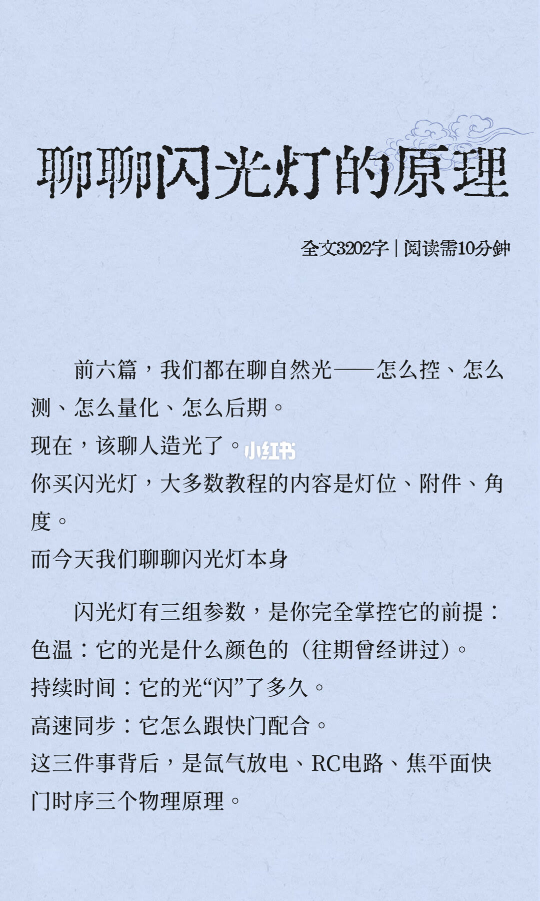
标题是「聊聊闪光灯的原理」，副行写全文 3202 字、阅读需 10 分钟。前六篇都在聊自然光：怎么控、怎么测、怎么量化、怎么后期。这一篇改聊人造光。多数教程讲灯位、附件、角度；这一篇讲闪光灯本身。完全掌控它的前提是三组参数：色温，光是什么颜色（往期曾经讲过）；持续时间，光闪了多久；高速同步，它怎么跟快门配合。背后是氙气放电、RC 电路、焦平面快门时序。这一页没有灯位图，也没有闪光指数。
2/12
色温：5500K 的太阳
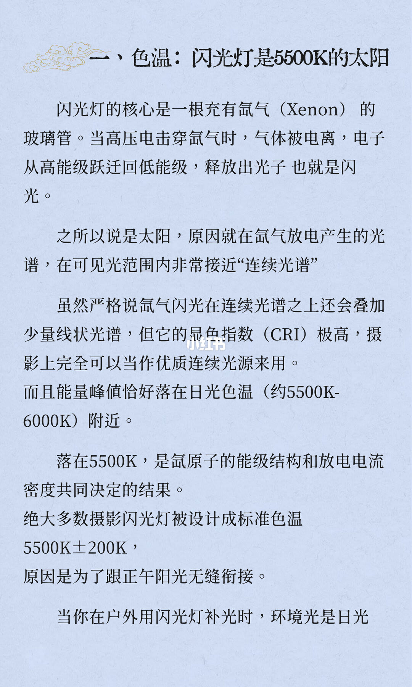
标题「一、色温：闪光灯是 5500K 的太阳」。核心是充氙气的玻璃管。高压电击穿氙气，气体电离，电子从高能级回到低能级，放出光子，就是闪光。叫太阳，是因为可见光范围内的光谱非常接近连续光谱。严格说连续光谱上还会叠少量线状光谱，但显色指数极高，摄影上可以当优质连续光源。能量峰值落在日光色温附近，约 5500K–6000K。落在 5500K，是氙原子能级结构和放电电流密度一起决定的。绝大多数摄影闪光灯被设计成标准色温 5500K±200K，为了跟正午阳光无缝衔接。页末起句：户外补光时，环境光是日光。显色指数没有印出具体数字。
3/12
和日光一致，和暖光会反差
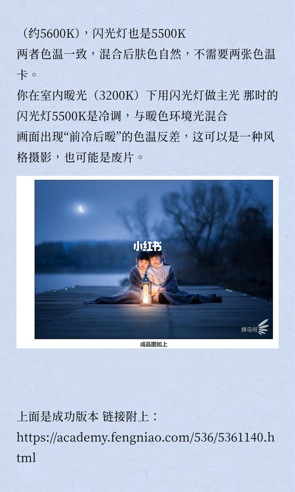
承接上一页：环境光约 5600K，闪光灯也是 5500K。两者一致，混合后肤色自然，不需要两张色温卡。室内暖光写成 3200K。这时用 5500K 闪光灯做主光，闪光是冷调，和暖色环境光混合，画面出现「前冷后暖」。这可以是风格，也可以是废片。中间是一张夜景成片：前景暖、背景冷蓝，右下有蜂鸟网水印。页上写「成品图如上」「上面是成功版本」，链接是 https://academy.fengniao.com/536/5361140.html 。人物姿态和这张成片的拍摄参数，图上没有印出来。
4/12
色温改不了，低功率还会偏
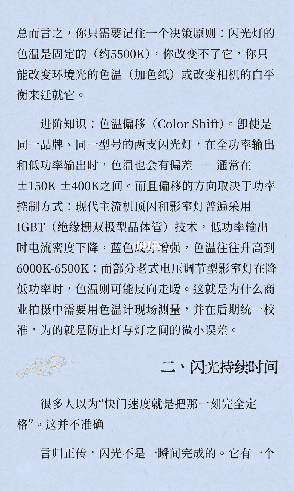
决策原则：闪光灯色温是固定的，约 5500K。你改变不了它，只能改变环境光的色温（加色纸），或改相机白平衡来迁就它。进阶是色温偏移。同一品牌、同一型号的两支灯，全功率和低功率也会偏，通常在 ±150K 到 ±400K。方向取决于功率控制方式。现代主流机顶闪和影室灯用 IGBT（绝缘栅双极型晶体管）：低功率时电流密度下降，蓝色成分增强，色温往往升到 6000K–6500K。部分老式电压调节型影室灯降低功率时，色温可能反向走暖。商业拍摄要用色温计现场测量，后期统一校准，为的是防止灯与灯之间的微小误差。下半开始「二、闪光持续时间」：很多人以为快门速度就是把那一刻完全定格，这并不准确。闪光不是一瞬间完成的。句子在「它有一个」处断开。
5/12
t.5 是标称，t.1 才是窗口
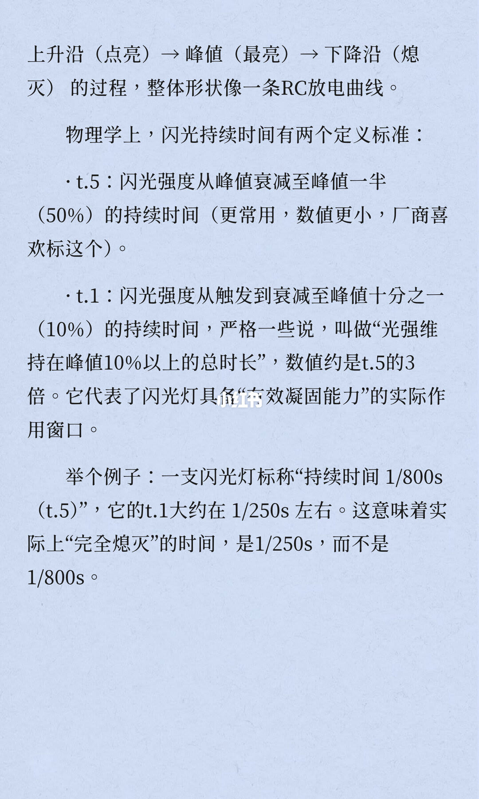
闪光有上升沿（点亮）、峰值（最亮）、下降沿（熄灭），整体像一条 RC 放电曲线。两个定义：t.5 是强度从峰值衰减到一半（50%）的持续时间，更常用、数值更小，厂商喜欢标这个。t.1 是从触发衰减到峰值十分之一（10%）的持续时间；更严的说法是光强维持在峰值 10% 以上的总时长，数值约是 t.5 的 3 倍，代表有效凝固能力的实际作用窗口。例子：一支灯标称持续时间 1/800s（t.5），它的 t.1 大约在 1/250s 左右。页上接着说，实际上「完全熄灭」的时间是 1/250s，而不是 1/800s。这一页没有闪光指数。
6/12
环境光看快门，闪光凝固看 t.1
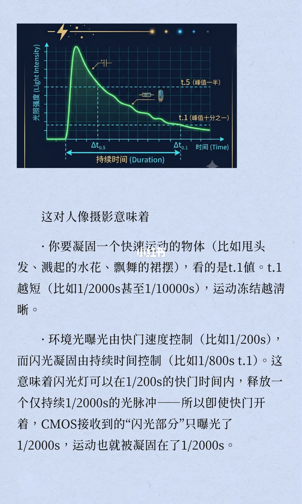
上半是光强–时间曲线：很快升到峰值，再拖一条下降的尾巴。横线标 t.5（峰值一半）和 t.1（峰值十分之一），底栏标持续时间。坐标轴没有印出刻度数字。对人像：凝固甩头发、溅起的水花、飘舞的裙摆，看 t.1。t.1 越短，比如 1/2000s 甚至 1/10000s，冻结越清晰。环境光曝光由快门速度控制，例子是 1/200s；闪光凝固由持续时间控制，例子写成 1/800s t.1。同一段接着说，闪光灯可以在 1/200s 的快门里释放一个仅持续 1/2000s 的光脉冲，所以 CMOS 收到的闪光部分只曝光了 1/2000s，运动被凝固在 1/2000s。1/800s 和 1/2000s 都印在这一段里，页上没有说它们是同一支灯的两个读数。
7/12
水滴是被闪光时间冻住的
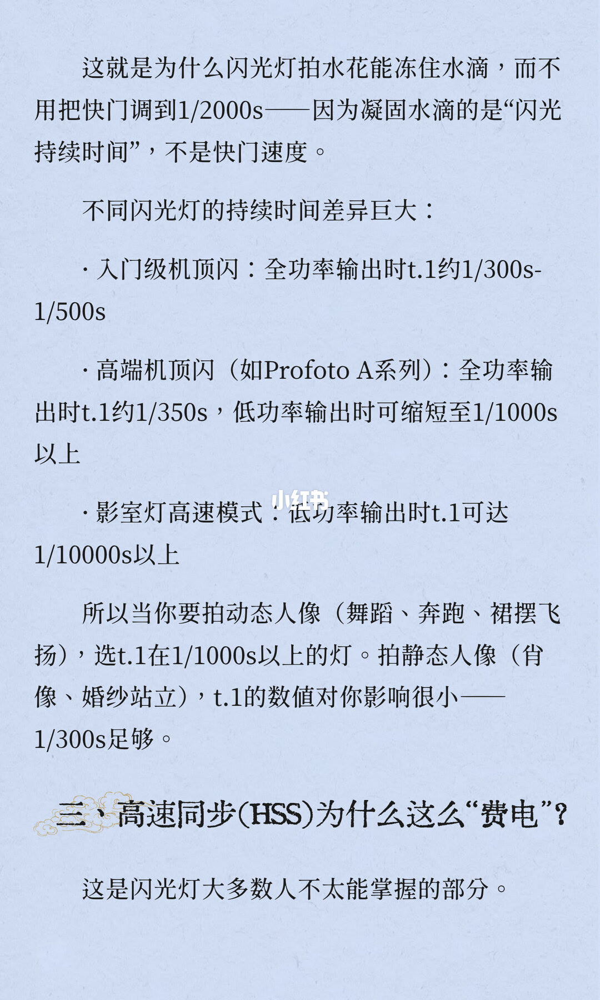
闪光灯拍水花能冻住水滴，不用把快门调到 1/2000s，因为凝固水滴的是闪光持续时间，不是快门速度。差异：入门级机顶闪，全功率时 t.1 约 1/300s–1/500s。高端机顶闪，例子是 Profoto A 系列，全功率时 t.1 约 1/350s，低功率时可缩短至 1/1000s 以上。影室灯高速模式，低功率输出时 t.1 可达 1/10000s 以上。动态人像（舞蹈、奔跑、裙摆飞扬）选 t.1 在 1/1000s 以上的灯。静态人像（肖像、婚纱站立）里，t.1 影响很小，1/300s 足够。页末起题「三、高速同步（HSS）为什么这么费电」，并说这是大多数人不太能掌握的部分。
8/12
普通同步过不了那条窄缝
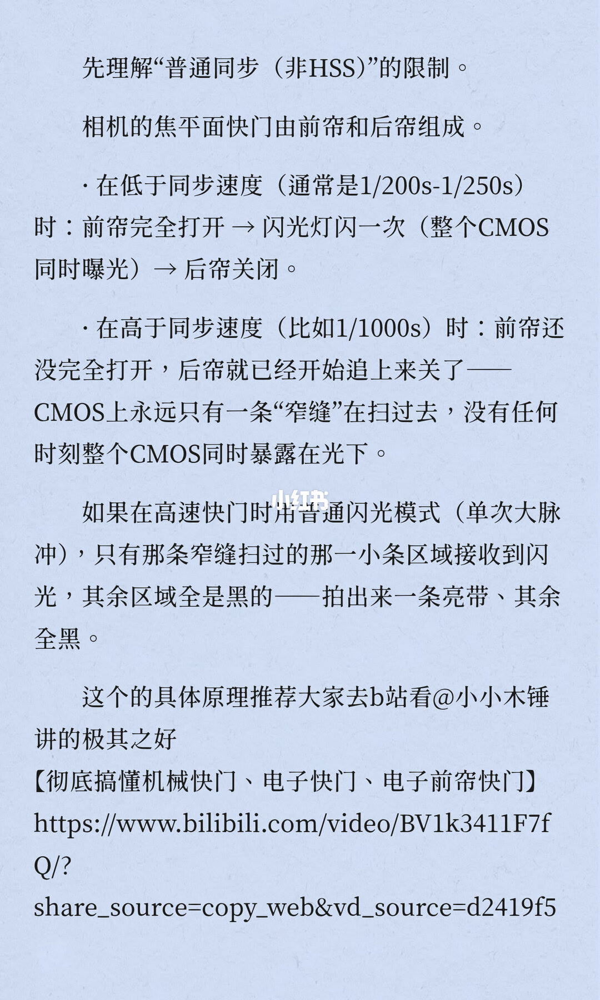
先理解普通同步（非 HSS）的限制。焦平面快门由前帘和后帘组成。低于同步速度，通常是 1/200s–1/250s：前帘完全打开，闪光灯闪一次，整个 CMOS 同时曝光，后帘关闭。高于同步速度，例子是 1/1000s：前帘还没完全打开，后帘就已经开始追上来关了。CMOS 上永远只有一条窄缝在扫，没有任何时刻整块同时暴露在光下。这时如果用普通闪光（单次大脉冲），只有窄缝扫过的那一小条接到闪光，其余全黑，拍出来一条亮带。原理推荐去 B 站看 @小小木锤 的《彻底搞懂机械快门、电子快门、电子前帘快门》，视频号 BV1k3411F7fQ。链接换行之后的完整参数无法确认。
9/12
高速同步把一次闪光拆成一串脉冲
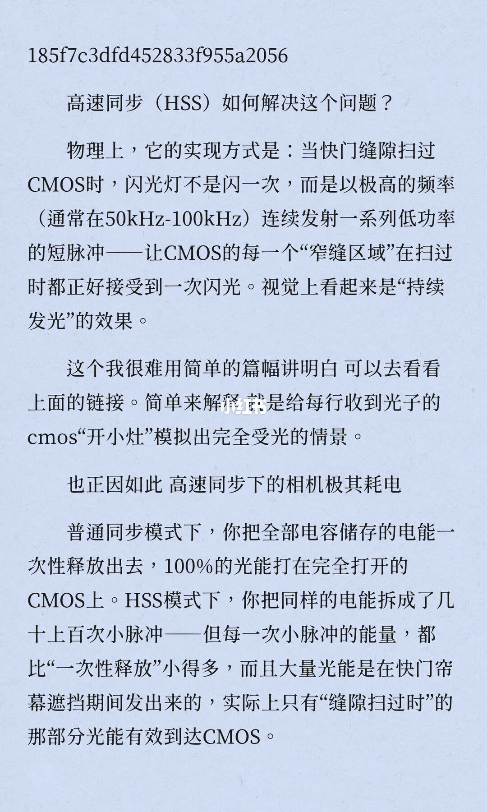
页顶另有一串字符，用途无法确认。正文问高速同步如何解决窄缝。快门缝隙扫过 CMOS 时，闪光灯不是闪一次，而是以极高频率连续发一串低功率短脉冲，通常在 50kHz–100kHz，让每一段窄缝扫过时都正好接到一次闪光，看起来像持续发光。作者说很难用短篇幅讲明白，建议看上面的链接。简单解释是给每行收到光子的 CMOS 开小灶，模拟完全受光。也因此，页上写高速同步下的相机极其耗电。普通同步把电容里的电能一次放完，100% 的光能打在完全打开的 CMOS 上。HSS 把同样的电能拆成几十上百次小脉冲，每次都小得多，而且大量光能是在帘幕遮挡期间发出来的，只有缝隙扫过时的那部分有效到达 CMOS。
10/12
HSS 是功率代价，不是更好的闪光
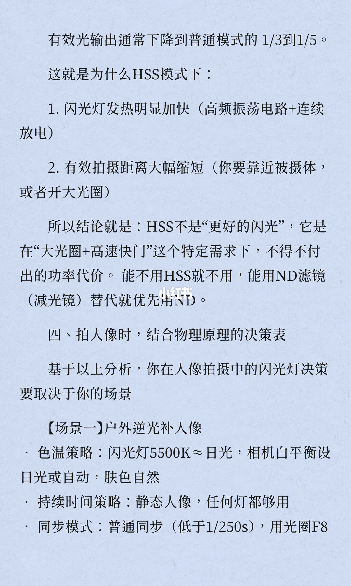
有效光输出通常下降到普通模式的 1/3 到 1/5。所以 HSS 模式下：闪光灯发热明显加快，原因写成高频振荡电路加连续放电；有效拍摄距离大幅缩短，要靠近被摄体，或者开大光圈。结论：HSS 不是更好的闪光，它是「大光圈加高速快门」这个需求下不得不付的功率代价。能不用就不用，能用 ND 滤镜（减光镜）替代就优先用 ND。第四节是拍人像时结合物理原理的决策表，决策取决于场景。场景一，户外逆光补人像：色温上闪光灯 5500K 接近日光，白平衡设日光或自动，肤色自然；静态人像任何灯都够用；同步用普通同步，低于 1/250s，用光圈 F8。这句在下一页才写完。
11/12
四个场景各选一种同步
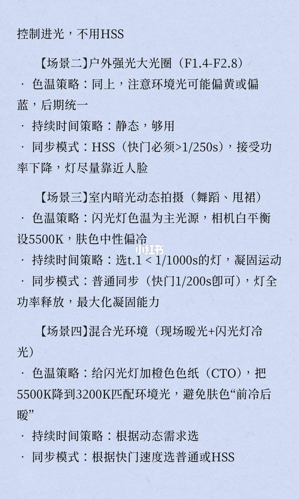
场景一的同步句收在页首：用 F8 控制进光，不用 HSS。场景二，户外强光大光圈（F1.4–F2.8）：色温策略同上，注意环境光可能偏黄或偏蓝，后期统一；静态，持续时间够用；同步用 HSS，快门必须大于 1/250s，接受功率下降，灯尽量靠近人脸。场景三，室内暗光动态（舞蹈、甩裙）：闪光灯色温为主光源，白平衡设 5500K，肤色中性偏冷；选 t.1 小于 1/1000s 的灯来凝固运动；普通同步，快门 1/200s 即可，灯全功率释放，最大化凝固能力。场景四，现场暖光加闪光灯冷光：给闪光灯加橙色色纸（CTO），把 5500K 降到 3200K 去匹配环境光，避免肤色前冷后暖；持续时间按动态需求选；同步按快门速度选普通或 HSS。
12/12
三件事各有一个物理原因
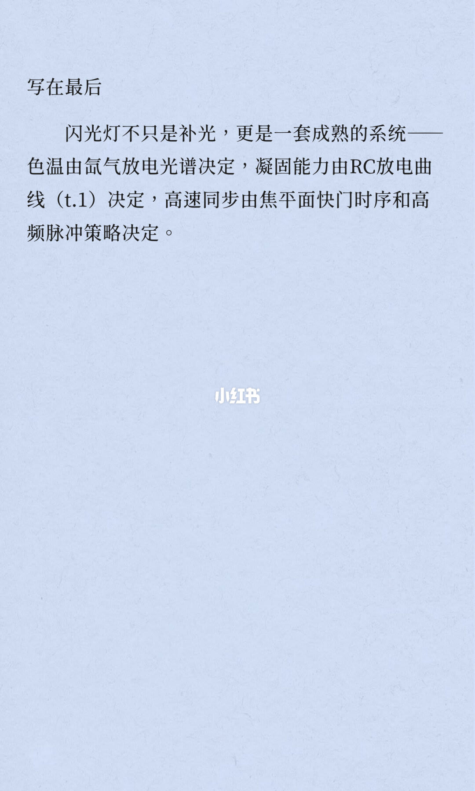
「写在最后」：闪光灯不只是补光，更是一套系统。色温由氙气放电光谱决定，凝固能力由 RC 放电曲线（t.1）决定，高速同步由焦平面快门时序和高频脉冲策略决定。没有新的数字。
收尾
先定色温，再看 t.1，最后才决定要不要 HSS
结论
闪光灯能出神图，是因为色温、持续时间和同步方式都能按场景选，而不是因为灯比快门更亮。色温大约固定在 5500K，和正午日光能接上；要改的是环境光色纸或相机白平衡。凝固动作看 t.1，不看快门。快门低于同步速度就用普通同步，一次把光打在整块传感器上。只有大光圈加大快门才用高速同步，并接受有效光降到普通模式的 1/3 到 1/5。能用减光镜把快门压回同步速度以下，就优先不用 HSS。
支撑页
三组参数在 1/12，三句原因在 12/12。氙气和 5500K±200K 在 2/12。日光约 5600K 与室内 3200K 的前冷后暖在 3/12。色温改不了、低功率偏移在 4/12。t.5 与 t.1 的定义和 1/800s 例子在 5/12。曲线和快门、持续时间分工在 6/12。三档灯的 t.1 在 7/12。窄缝和亮带在 8/12。高频脉冲和能量拆分在 9/12。1/3 到 1/5、减光镜和场景一在 10/12。场景二到四在 11/12。
边界
十二页都没有印闪光指数。快门和持续时间都是页上的例子或标称范围，不是这一次实拍的测光。显色指数只写了极高，没有具体数字。第 6 页同一段里，持续时间的例子是 1/800s t.1，光脉冲又写成 1/2000s，没有说明二者关系。第 7 页动态人像写「t.1 在 1/1000s 以上」，第 11 页场景三写「t.1 小于 1/1000s」，比较符号不一致，不能合成一个阈值。第 5 页把 t.1 说成完全熄灭，定义本身仍是峰值 10%。第 9 页写的是相机极其耗电，第 10 页写的是闪光灯发热和光输出下降。第 3 页成片标明来自蜂鸟网链接，拍摄参数没有印在这一页。第 6 页曲线没有刻度。B 站链接换行后的完整参数无法确认。